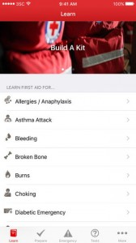

Vitamin D is important for the development of healthy bone, muscles and teeth and low levels are linked to illnesses including rickets in children and osteoporosis in adults.
Evidence is also emerging that vitamin D may help reduce the risk of bowel cancer and other cancers and may be linked to a number of other diseases.
With this in mind it is important to make sure your vitamin D level is sufficient for good health.
Taking a daily Vitamin D supplement
According to the HSE, taking a daily vitamin D supplement is another way to meet your vitamin D needs. They suggest taking a supplement that provides 5 micrograms of vitamin D3 per day. However, it is always a good idea to talk to your doctor before taking a supplement.
The HSE also recommend that all babies from birth to 12 months are given a vitamin D supplement. To find out more about this speak with your GP.
Pop into Corks Pharmacy and talk to a Pharmacist who would be happy to help!
Hayfever
Learning how to avoid triggers and finding the right treatment can make a big difference
What is it?
Hay fever, (also called allergic rhinitis) causes cold-like signs and symptoms such as a runny nose, congestion, sneezing and sinus pressure. But unlike a cold, hay fever isn’t caused by a virus. Hay fever is caused by an allergic response to outdoor or indoor allergens, such as pollen, dust mites or pet dander. Hay fever is very common — it affects more than 1 in 5 people.But you don’t have to put up with annoying symptoms. Treatments are available!
Causes
During a process called sensitization, your immune system mistakenly identifies a harmless airborne substance as something harmful. Your immune system then starts producing antibodies to this harmless substance. The next time you come in contact with the substance, these antibodies recognize it and signal your immune system to release chemicals such as histamine into your bloodstream. These immune system chemicals cause a reaction that leads to the irritating signs and symptoms of hay fever.
Treating Hayfever
There are many different types of treatments.It is best to talk to your Pharmacist or GP before beginning any treatment!
Pop into Corks Pharmacy and talk to a Pharmacist who would be happy to help!
First Aid
First aid is: help given to a person who has been hurt or is suddenly taken ill. First aid is the steps you can take before a person gets expert medical help or before the next level of help arrives. First aid can sometimes save a person’s life, but more often it is help given in an everyday accident or illness.
The Irish Red Cross have recently launched a First Aid App free to download from the Apple App and Google Play Stores for Smartphones and Tablets.

Awareness can save lives!
Food Intolerance Testing
Relief from Food Intolerance Symptoms
Are you suffering from Digestive Problems, migraines or Skin Problems, Tiredness, Depression, Joint pain or Weight Gain?
It could be that you are one of the 45%* of the population suffering from food intolerance. Food intolerance is different from food allergy in that symptoms are delayed, and usually more than one type of food is causing the problem. Symptoms of food intolerance are not life threatening, but they can still have a major impact. Often people with food intolerance take medicines to try and ease their symptoms rather than considering that food could be the cause.
Typically each food intolerance sufferer will have their own pattern of symptoms and a unique “finger-print” of foods that they are reacting to. Working out which foods are causing particular symptoms is not easy when, unlike food allergy, food intolerance symptoms appear up to two or three days after eating the particular foods. You may be eating your problem food or foods every day without realising it.
Based on years of research, 91% of Lorisian customers would recommend the test on offer, and scientific data collected from over 5000 users of the test show that over 3 out of 4 people feel better after acting on the results, the majority within three weeks.